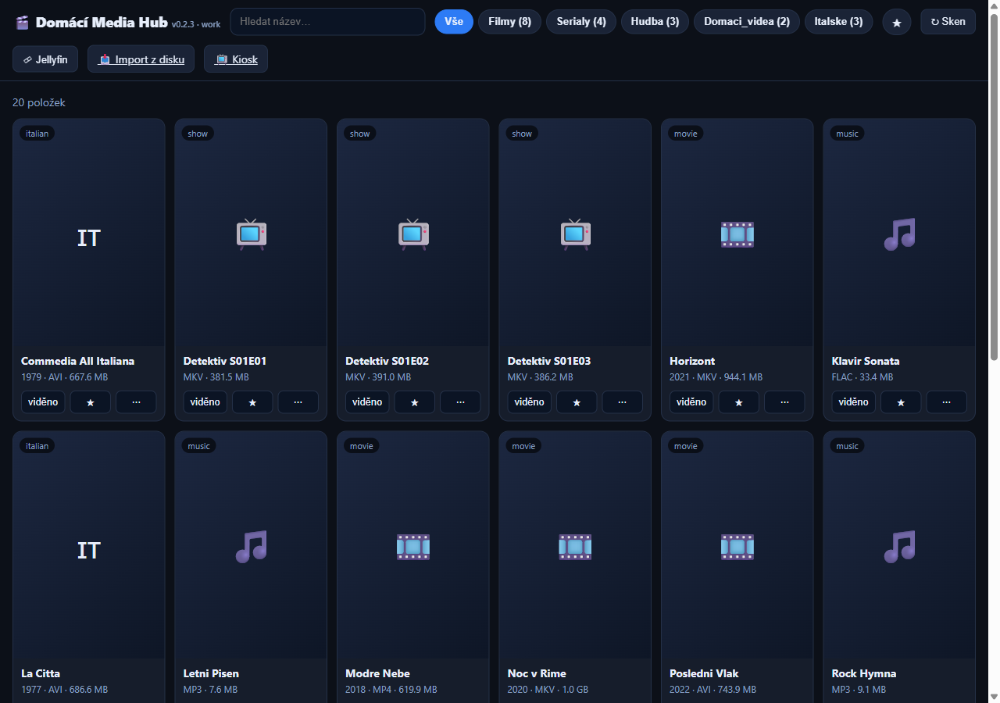
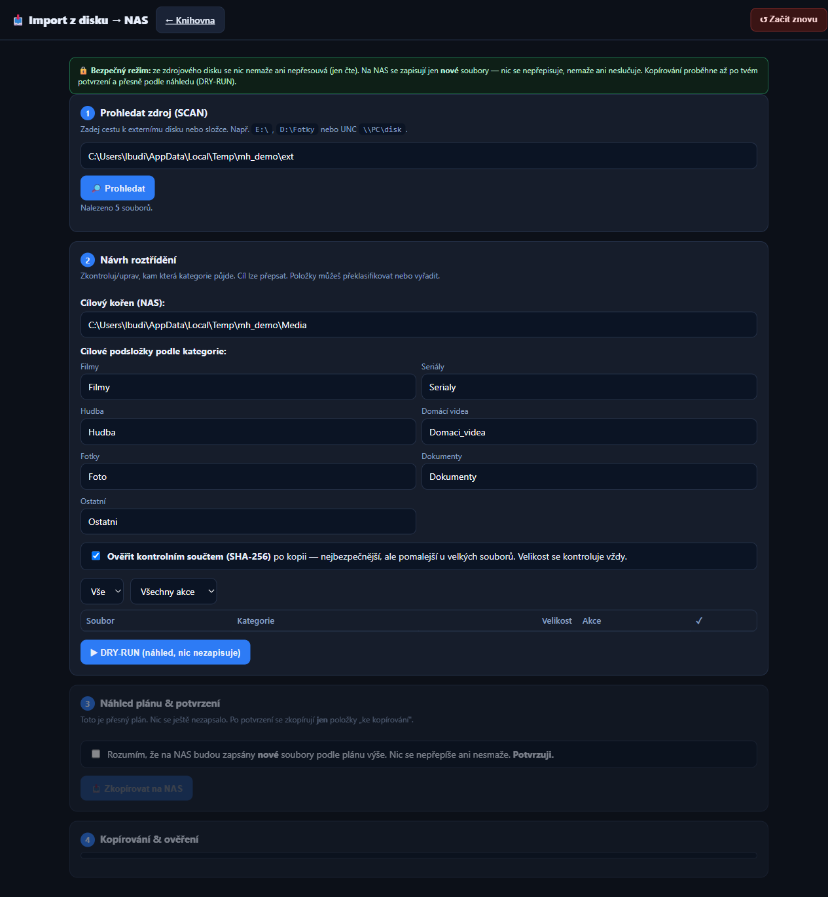
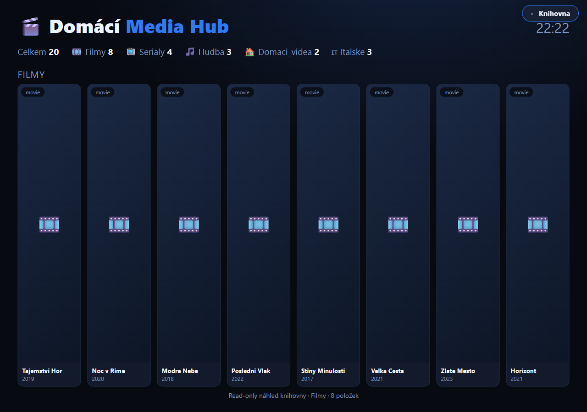

🎬Domácí Media Hub
Vlastní přehledný rozcestník nad mojí domácí filmotékou, seriály a hudbou uloženými na NASu. Běží celý jen u mě v síti — na Raspberry Pi kiosku u televize, vedle dashboardu chytré domácnosti. Umí bezpečně naimportovat rozházená média z externího disku na NAS a doplnit obaly a popisy z Jellyfinu. Žádný cloud, žádné posílání mojí knihovny ven.
Python (stdlib) SQLite Raspberry Pi kiosek Jellyfin LAN-only (bez cloudu)
Co to dělá
Mám doma NAS plný filmů, seriálů, hudby a domácích videí — ale proklikávat se k nim přes síťové složky není žádná radost. Media Hub je nad tím lehký, hezký rozcestník: ukáže knihovnu jako dlaždice, umí hledat a filtrovat podle typu, označit „viděno" a „oblíbené" — a běží přímo u televize na malém Raspberry Pi.
Jen čte, nic nerozbije. Dashboard se k médiím na NASu chová striktně read-only — jen je prochází (žádné mazání, přesouvání ani přepisování). Příznaky „viděno/oblíbené" i index si drží ve své vlastní lokální databázi (SQLite), nikdy ne na NASu.
Bezpečný import z disku na NAS. Když najdu starý externí disk s rozházenými médii, Media Hub ho nejdřív jen prohledá, roztřídí soubory podle typu (filmy, seriály, hudba, fotky, domácí videa, dokumenty) a ukáže náhled plánu. Teprve po mém potvrzení kopíruje — a jen nové soubory: zdroj se nikdy nemaže, na NASu se nic nepřepisuje, vše se po kopii ověří. Pořadí je vždy prohledat → návrh → náhled → potvrdit → kopírovat → ověřit.
Obaly a popisy z Jellyfinu. Volitelně se napojí na můj domácí Jellyfin (běží na NASu) a doplní k filmům obal, žánr, délku a popis — pořád ale jen čte, do Jellyfinu ani na NAS nic nezapisuje.
Spojený s chytrou domácností. Na kiosku u televize se přepíná jedním ťuknutím mezi dashboardem chytré domácnosti a Media Hubem — dvě rozhraní, jedna obrazovka.
Klíčové funkce
- Knihovna jako dlaždice — filmy, seriály, hudba, domácí videa i samostatná sekce italských filmů; hledání podle názvu, filtr podle typu, „viděno" a „oblíbené".
- Read-only nad NASem — jediná operace nad knihovnou je čtení; příznaky a index v lokální SQLite, nikdy ne na NASu.
- Bezpečný import z externího disku — prohledá zdroj, roztřídí podle typu, ukáže náhled (dry-run) a kopíruje až po potvrzení; jen nové soubory, bez přepisu, s ověřením (velikost + kontrolní součet).
- Jellyfin integrace — obaly, žánr, délka a popis z domácího Jellyfinu; čistě pro zobrazení, read-only.
- Kiosek u televize — Raspberry Pi v režimu celé obrazovky, dotykové přepínání mezi chytrou domácností a médii, automatická nástěnka knihovny.
- Bez cloudu, jen LAN — celé to běží u mě v síti, žádný účet, žádné posílání knihovny ven, lehké jádro v čistém Pythonu.
Náhledy



Náhledy jsou s ukázkovou (demo) knihovnou — moje skutečná filmotéka na web nepatří.
Stav
Pracovní (work) verze v0.2.3 (červen 2026). Běží u mě doma na Raspberry Pi kiosku u televize, čte knihovnu z NASu. Soukromá, jen v domácí síti (LAN), bez veřejného hostingu a bez instalátoru ke stažení — skutečná knihovna ani osobní data nejdou na web. Lehké jádro v čistém Pythonu (bez závislostí), frontend ve vanilla JS.